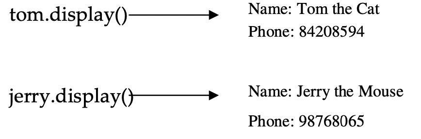
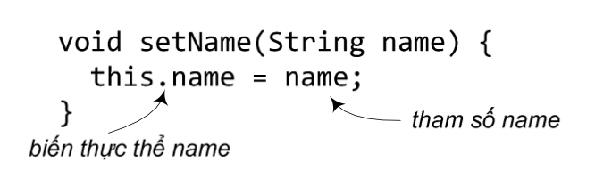

Nhớ lại rằng lớp là khuôn mẫu để tạo ra các đối tượng thuộc lớp đó. Khi ta viết một lớp, ta mô tả cách xây dựng một đối tượng thuộc lớp đó. Ta đã biết rằng giá trị của cùng một biến thực thể của các đối tượng khác nhau có thể khác nhau. Nhưng còn các phương thức thì sao? Chúng có hoạt động khác nhau hay không? Đại loại là có. Mỗi thực thể của một lớp đều có chung các phương thức, nhưng các phương thức này có thể hoạt động khác nhau tùy theo giá trị cụ thể của các biến thực thể.
Ví dụ, lớp PhoneBookEntry có hai biến thực thể, name và phone. Phương thức display() hiển thị nội dung của đối tượng PhoneBookEntry, cụ thể là giá trị của name và phone của đối tượng đó. Các đối tượng khác nhau có các giá trị khác nhau cho hai biến đó, nên nội dung được display() hiển thị cho các đối tượng đó cũng khác nhau.
Xem lại ví dụ trong Hình 3.3, ta sẽ thấy các lời gọi phương thức display() từ tom và jerry hiện ra kết quả khác nhau trên màn hình, tuy rằng mã nguồn của display() cho tom hay jerry đều là một:
void display() {
System.out.println("Name: " + name);
System.out.println("Phone: " + phone);
}
Thực chất, nội dung trên của display() tương đương cách viết như sau:
void display() {
System.out.println("Name: " + this.name);
System.out.println("Phone: " + this.phone);
}
Trong đó, this là từ khóa có ý nghĩa là một tham chiếu đặc biệt chiếu tới đối tượng chủ của phương thức hiện hành. Chẳng hạn, đối với lời gọi tom.display(), this có giá trị bằng giá trị của tham chiếu tom; đối với lời gọi jerry.display(), this có giá trị bằng jerry. Có thể nói rằng khi gọi một phương thức đối với một đối tượng, tham chiếu tới đối tượng đó được truyền vào phương thức tới một tham số ẩn: tham chiếu this.
Tham chiếu this có thể được dùng để truy cập biến thực thể hoặc gọi phương thức đối với đối tượng hiện hành. Thông thường, công dụng này của this chỉ có ích khi tên biến thực thể bị trùng với một biến địa phương hoặc tham số của phương thức. Chẳng hạn, giả sử phương thức setName() của lớp PhoneBookEntry lấy một tham số name kiểu String trùng tên với biến thực thể name của lớp đó. Từ trong phương thức setName(), nếu dùng tên 'name' thì trình biên dịch sẽ hiểu là ta đang nói đến tham số name. Để gọi đến biến thực thể name, cách duy nhất là sử dụng tham chiếu this để gọi một cách tường minh. Ví dụ như sau:
